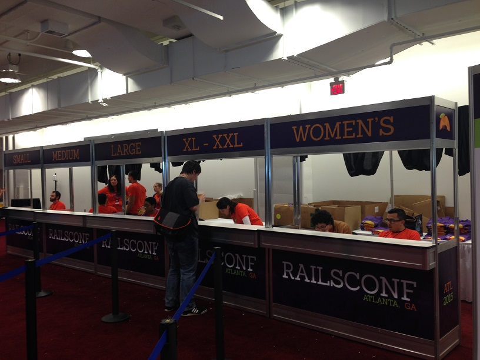

Reflections on my first RailsConf
Day 1
DHH's Opening Keynote
How awesome was it to hear the creator of Rails talk about how it is evolving and changing, particularly in response to some issues that people in the community have had? Maybe the new version of turbolinks in Rails 5 won't be much more well received, but the effort to change is good.
His talk will be online soon enough for your own viewing pleasure, but I had a few reactions to it. He talked about the purpose of Rails being composed of integrated systems (or monoliths) was done with great intention. It gives people or small groups the ability to launch an app and have an immediate impact, obviating the need for a massive team to manage all the parts before you can be successful. I find it interesting that Rails is built for this kind of self-reliance, yet has a great community around it. Maybe the community in the DC area is just great? Maybe the community aspect has sprung up out of a desire (conscious or otherwise) to balance that self-reliance? Maybe it's a large community of self-reliant smaller groups so that averages out? Regardless, I found that striking.
Other amusing nuggets from DHH: “client-side mvc” whispered like it's a dirty word (well, phrase I suppose) and "If we don't have toys, we're just adults."
Lillie Chilen on sustainable open source
Even though this talk was aimed more at creators/sustainers of open source, it was interesting. I think her point about not feeling guilty for walking away from being a contributor to a project you've been working on is a great thing to remember for other aspects of life. You can only give so much, and if you're burnt out the project isn't going to get your best work anyhow. Her tips for maintainers:
- Respond to PRs within 7 days or the chance of someone returning to fix it diminishes exponentially.
- Documentation, project management & recruiting contributors are the 3 ways to increase support & end burnout in open source.
- Celebrate people's contributions regularly.
- Mozilla found that showing people the next bug they can work on increases the chance that they contribute again.
Sam Phippen—Rails Test Types in Rspec
I love writing tests. Love it. Do I do it enough? No. Am I super advanced at it? No. Love it anyhow. I don't know why. So I was excited for this talk.
Sam pointed out that while comments might seem like a good idea at first to explain code to future people (how it works or is supposed to), comments lie—either they never were accurate or changes make it no longer apply. So you need to test.
The three main Rails test types are: model, controller, and feature. I've always been a little confused at what differentiates a controller and a feature test (or set of them), but he pointed out that features testing is used to do the outside part of the outside-in testing cycle (browser level). You write it as a user would describe what they're doing/seeing (click sign in link, fill out form, press submit, etc.).
Sam also had a good tip about moving things out of the controller that don't really need to be there. He suggested that when you see an ActiveRecord scope in the controller, it's often a good idea to push it into the model like so:
def self.some_method where(:feature => thing)The lasting soundbyte of the session: “Sweet tea tastes like sugar and the apocalypse.”
Courteney Ervin on Open Source Contributions
I was excited for this talk partially because Courteney was one of my Rails teachers, but also because I've always wondered where to start with contributing to open source. Here are a few places that she suggested to look:
- CodeMontage
- OpenHatch
- GitRec (matches work you've done already to similar open source projects)
- CodeTriage
- Contribulator
- 24 Pull Requests
Her suggested workflow for open source work:
- fork + git clone
- git remote (set a remote for the main version of the project)
- git branch (name it relevant to your code)
- git commit
- git push
- git pull & rebase (as you continue to work on it)
In your pull request she said that you should list in detail the changes that you made (makes it easier for project maintainers to find and approve), if you make front end changes take screenshots (so they don't have to run it to see the changes), and and specifically say that you're open to feedback on your code (you can improve greatly this way). Feel free to connect with her on twitter (@courteneyervin) if you've got questions. I can't recall her email right now. Her slides for the talk can also be found online.
Day 2
Kerri Miller on hiring
I got here with about 10 minutes left in this talk because I had to go to the dentist in the morning because I broke a tooth (on an almond of all things) the day before. Bummer. But she did make a good point in those final minutes. Whiteboard interviews are artificial. You can't look anything up. Here's her twitter: @kerrizor.
Bree Thomas on moving fast as a new dev
“Working hard, being passionate, and being committed do not necessarily add up to an ability to move at a fast speed.” What a great point. For coding and for life.
These are the assumptions about apprentices that employers make:
- assume apprentices will be vocal and open
- seniors are well equipped to teach juniors
These are the assumptions of themselves and their career that apprentices make:
- immediately employable and well compensated
- they are nothing like an apprentice (as in other fields, in history, etc.)
- transitions between levels are well defined (apprentice—junior dev—senior dev)
There need to be good measurements of apprenticeships. The idea that one size fits all is not true. Hard coding skills are important but should not be the only thing devs are evaluated on. It's also really important to follow through on saying you're going to measure and evaluate.
“So few apprenticeships are structured for long-term commitment.” Why put in work on apprentices if they're only going to be there for a few months? Makes sense in a way. But if you want apprentices to be there long-term, if they prove themselves that is, then structure it for that. Even if they get a job elsewhere, it's only going to benefit the wider tech community.
Noel Rappin on Rspec
The slides for the talk.I didn't take notes on this one because I was too busy paying attention to the presentation. He dug into why Rspec does what it does and how you can take advantage of it. I highly recommend checking out the recording of this talk if that's something you're interested in.
And now for something completely different...
A brief interlude in this long post for this picture of the t-shirt lines. How do you know you're in tech? When the sizes are: small, medium, large, xl and xxl, and women's.
Sandi Metz at Women Who Code
This was easily the best part of the conference. I got to share an Uber with Sandi Metz. I was heading out of the conference place to hop on MARTA to get to an event being held by Women Who Code Atlanta (with my WWC shirt on) when I passed Sandi Metz and another person. We talked about how the second you learn how to do any kind of programming or tech-related thing, you're instantly the person people ask for every kind of technical help possible. "Hey how do you do ________ ?" "Can you fix my _________?" So true.
Some advice that she passed on:
- Think about the acronym that your book's going to be. POODR could've been worse.
- If you keep yourself from doing things because there are some people in the world who know more, you will never do anything.
- If you have 2 bikes, you duplicate the code. If you have 3, then you start to abstract. (Speaking about when you use subclasses and other abstractions become necessary.)
While understandably very busy, she's very approachable. Someone asked a question about being nervous to do your first talk at a conference, and she said that she's willing to do a Google Hangout with anyone nervous first timers preparing a talk to walk through it with them, give pointers, or just be a test audience.
I think the thing that stuck with me the most was that she was finally convinced to write POODR when she realized that there were no Ruby books written by women. Wow. Representation matters. To highlight it, one of the students in the Rails Engineering class that I TA-ed for at The Iron Yard said that when she was trying what kind of programming she wanted to learn, she saw Ruby (and Rails) and that it it had a woman presenting at a local meetup (I don't know who this was), and a woman who'd written a seminal work in the field (Sandi Metz). She's a great programmer already and I can only imagine what she'll do in the future because she saw people like her in the Ruby/Rails community. It can sound a little trite sometimes, but I'll say it again because it's true: representation matters.
Day 3
I look fewer and fewer notes as the conference wore on because I realized that taking notes drew my attention away from the talks. I can always watch the videos again.
Steve Kinney on JavaScript
@stevekinneyThis was a great talk. It's definitely one that I'm going to rewatch and really try to incorporate into my work.
new keyword “let”
- “Let pretty much does what you think it's going to do. Which is pretty amazing for JavaScript.”
- “let: it's like var but it does the thing you think it's going to do.”
template strings instead of string concatenation
- uses backticks
`` - used for string interpolation
`${}`
arrow functions
const add = (a, b) => a + b;- lexically bind the current scope to this
Michael Chan and ReactJS
Talk to Michael Chan if you watch his talk and want to learn more. @chantastic
Sidenote
It was about this time that I turned to my friend next to me, a guy who's been in tech for many years, and asked him how to spell Hedy Lamarr's name. Namely, did it have one 'r' or two? He looks at me, utter confusion on his face, and asks who she is. I thought he was joking so I just kind of looked at him blankly. Oh he's serious? I'm going to refer you to her wikipedia page because her official biography website is sadly lacking in information for some reason. I can't do her justice in this blog post.
Sandi Metz talk “Nothing is Something”
She talked a little bit about this at the Women Who Code event the previous night and I prepared for it to be amazing, but it was mind blowing in a way that I didn't expect. The main point was that “If is an enabler that prevents you from learning OO and using the power of objects.” A few highlights (I will definitely be rewatching the video):
- If you send it a message, nil is something. It's like some kind of offshoot of a Schrodinger OO rule. As soon as you think of it, it exists.
- Inheritance is for specialization. It is not for sharing code.
- You're done checking for nil. Stop it right now.
I don't know how much I'll incoporate into my code, especially right away, but I really like her ideas here. Even though I do also like my if statements.
Kent Beck's closing keynote
I didn't take particular notes on this because I wanted to absorb it more, so here are a few soundbites and mini-reflections:
- "Consciously encourage your own ideas."
- On software process: "If it helps, do it. If it doesn't help, stop doing it."
- Making public commitments to shared goals & measuring their accuracy sounds great for community organizations too.